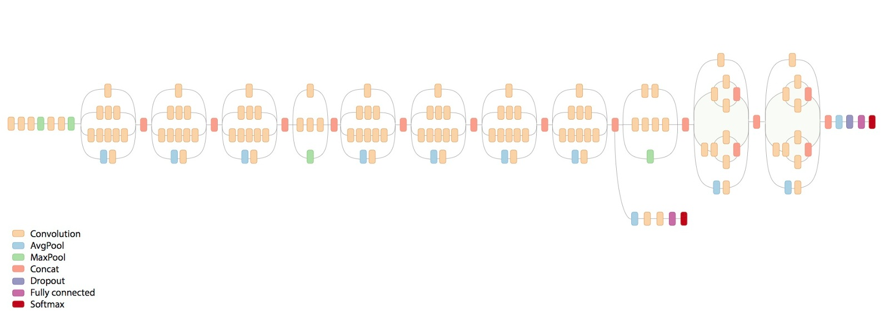

This system was built using a process known as Machine Learning.
That's where the ML comes from in the name.
We use the term Machine Learning because when creating an algorithm, the programer doesn’t tell it how to do something, rather it lets the computer learn from experience.
While there are many different types of machine learning algorithms, the one I am using is called a neural network, specifically a Convolutional Neural Network. But first Neural networks.
In the simplest terms, Neural Networks use a set of input nodes for which you give values (these values could be any type of numeric attributes) then has some number of hidden layers which are sets of nodes connected to each node in the previous layer.
For a classification problems, like this one, the final layer in the network has a node associated with each class.
Each node in each layer takes a weighted sum of all the previous layers nodes and then pass that value to an activation function.
The activation function typically maps the input in the space (-1, 1) to an output in the same space.
The primary requirement of these functions is that they not be linear, as if they are linear, the model will only be able to learn linear regression.
The last layer of a neural network typically uses the softmax function as it produces nice percent values of the models surety of a specific class (the value you see in the notification above is that output * 100)
Neural Networks learn by passing them data you already know the class of, letting it guess and be wrong, then calculating the loss on each node in the layer, then backpropagating through to previous layers to perform the same loss function, so on and so forth.

Now if you want to feed images to your neural network, the standard practice used to be to roll out your images line by line, and create an input layer that size, but that didn’t work very well because it didn’t respect the importance of the pixels' relationship to the pixels around them.
This is where CNN’s (Convolutional Neural Networks) come in.
CNN’s allow us to respect the 2D nature of an image by deriving the next layers weights by passing a kernel over the image.
A kernel is a grid of that slides of pixels geting data for the next layer as a function of the one central pixel and the pixels around it.
For a more in-depth description please checkout Computerphile’s videos about CNNs.

On to my project. My name is Blake Wintermute and I'm a high school intern at the Johns Hopkins University Applied Physics Lab.
During the summer of 2017 this was my project.
I originally tried using a Deep Learning (Deep Learning refers to using hidden layers of nodes in a neural network) library called Keras to implement a CNN. I tried for about a month, but to no avail.
The model's accuracy was little better than random.
I just didn’t have enough data.
I was doing some online research on a Friday afternoon when I came across the topic of transfer learning, the process of using a Neural Network trained on different classes for new jobs, so I thought I would give it a try.
I used Google’s inception v3 model (pictured right) to do this.
As Inception was trained for imagenet, a yearly image classification competition, it had been trained the many layers of abstraction necessay to effectively classify the images.
The transfer learning is performed by retraining the final layer of the NN for your classes.
Because the rest of the model is already trained, you can calculate the previous nodes values for each image, this cuts down on training time and ram usage.
As I only have a limited amount of data to train on, the model can only get so good.

I am attempting to work with the Johns Hopkins Medical Dermatology department to standardize their medical imaging protocols to allow for more data collection.
If you would like to get started in AI and Machine Learning, there are plenty of guides on the internet, you’ll pick it up fast.
I would recommend learning Python first as it is essential in understanding example code and writing your own.
Most ML stuff is in Python. Also, if you go to NMH, or know me in some other way, I’d be more than happy to help you get started in any way I can, provided I have time.
Thanks!
Finally I would like to say that while I kinda understand the ML stuff, I know very little about web design, servers, APIs, etc.
Thanks a bunch to my cousin Marty for helping set up the actual image upload mechanism!! His LinkedIn
I have been trying to make this website better as I learn more about WebDev in school so it may change frequently.